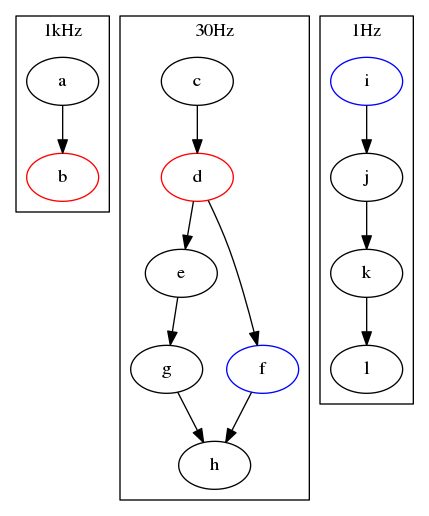

The schedulers operate on the plasm. Yes, the name scheduler is a little dry, and some think a plasm should have a metabolism or Krebs Cycle instead, but there were no motivating name collisions (as with ‘node’).
All schedulers should implement a basic interface for construction and execution (the same as the interface as the standalone Scheduler implements); scheduler-specific functions and parameters may exist outside this set.
Singlethreaded scheduler. This class will execute the cells in the plasm in topological order in a single thread.
Construct one around a plasm
Execute the graph in an infinite loop. Blocks.
Execute the graph niter times. This call will blocks until the execution is finished.
NOT (YET) IMPLEMENTED - These functions non-blocking versions of their execute*() counterparts. They start an execution thread in the background and return immediately.
Prepare jobs for a manually scheduled execution via run() or run_jobs()
Multiple methods to running scheduled jobs.
Returns true if a scheduled execution is still running.
If you’ve put the execution in the background (e.g. via a thread with one of the run* methods), then this stops the background graph execution at the end of the current process() call. It blocks until it is stopped
Calling the core scheduler’s api, either via execute() or as a sequence of prepare_jobs() and run*() commands will execute the plasm sequentially in the current thread. To drive the execution of a plasm in the background simply make use of the prepare_jobs() and run() commands via python threads.
s = Sheduler(p)
s.prepare_jobs(10)
execution_thread = threading.Thread(name="foo", target=s.run)
execution_thread.start()
# do some work
execution_thread.join()
This scheduler is fully reentrant, meaning, that when you stop() it may be executed again at which point it will result running whatever jobs were remaining when it stopped.
In future there should be an execute_async() implementation that will be a non-blocking counterpart to the blocking execute() functionality.
Scheduler for parallelising continual execution of multiple plasms.
Initialises the scheduler with a dictionary of name (string) and plasm key value pairs. disable_qt_management is there to ensure that any qt applications, especially imshows are closed down (or not) when the scheduler finishes spinning. This is especially useful as a parallelised set of plasms all work from a single QApplication instance - this ensures that control of them is handled from a single central location.
Puts each plasm’s execution in a thread and initiates them all. This blocks until all threads are exited.
Call this after spinning has finished - this will print the runtime statistics of each plasm’s execution.
It can be useful to execute your plasms in parallel, particularly if they are required to execute at different rates. Purely independant plasms can simply be run as described above, each in a separate thread. These can also be executed rather simply via the multiplasm scheduler. Consider the following triplet of plasms:

Python ectoscript code for scheduling this in a perpetual loop:
# construct plasms
plasms = {
"odometry": plasm_odometry,
"tracking": plasm_tracking,
"mapping" : plasm_mapping,
}
scheduler = ecto.ThreadedScheduler(plasms)
scheduler.spin()
The interesting use cases however are those for which there are points of convergence in each ecto plasm’s pipeline. For example, the above plasms may represent the flows for incoming odometry (1kHz), visual tracking (30Hz) and background mapping (1Hz). Each is a distinct pipeline, with either transfer of data or event triggers taking place at particular points.
The python ecto script to handle this is exactly the same, we only make sure that both the red cells in the first and second plasm are in fact the same cell. Similarly for the blue cells. For example:
plasm_odometry.connect( a["out"] >> red["in1"])
plasm_tracking.connect([ c["out"] >> red["in2"],
red["out1"] >> e["in"]
red["out2"] >> f["in"]
e["out"] >> g["in"]
f["out"] >> h["in1"]
g["out"] >> h["in2"]
]
)
# ...
Of course, this mean’s that red’s process() function may be called simultaneously from multiple threads and sensitive code must be protected with mutexes. You will also note in this example that the inputs to red are different in both plasms - if you wish to distinguish this from inside the process() function you will have to enable the cell’s connected_inputs_only parameter:
red = ecto.MyCell(connected_inputs_only=True)
plasm_odometry.connect( a["out"] >> red["in1"])
plasm_tracking.connect([ c["out"] >> red["in2"],
red["out1"] >> e["in"]
red["out2"] >> f["in"]
e["out"] >> g["in"]
f["out"] >> h["in1"]
g["out"] >> h["in2"]
]
)
# ...
and check the input tendrils to the process function. For example:
int process(const ecto::tendrils& in, const ecto::tendrils& out) {
if ( in.find("in1") != in.end() ) {
processIn1(in, out);
} else if (in.find("in2") != in.end() ) {
processIn2(in, out);
} else {
processIdle(in, out);
}